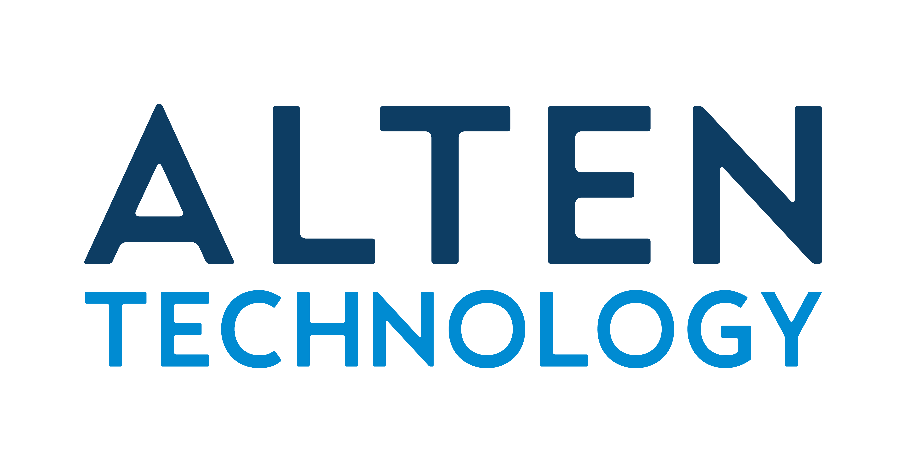

What if ALTEN could shortlist the right engineer from a phone in 90 seconds?
No public ALTEN mobile app surfaced in the App Store or Google Play, so this teardown uses the public careers stack instead. The opportunity is clear: keep Greenhouse, but add a mobile hiring layer that reduces apply friction and turns recruiter backlog into a fast manager workflow.
ALTEN already has demand. The bottleneck is the handoff from branded careers pages into a long Greenhouse form, then into manual screening across dozens of specialist reqs.
Greenhouse apply handoff
Branded visit becomes a long form before anyone proves candidate fit.
Useful ATS discipline. Weak mobile momentum.
Mobile hiring cockpit
AI fit summaries on top of Greenhouse, tuned for busy engineering managers.
Why this is worth fixing now
ALTEN's public footprint already says enough: active specialist hiring, a WordPress-to-Greenhouse handoff, and a candidate flow with several mandatory inputs before value is proven. That is a mobile workflow problem hiding inside a recruiting stack.
130 live jobs
The official Greenhouse board shows 130 openings, with visible recent postings from March 23 to March 27, 2026. This is active throughput pressure, not an archival careers page.
ALTEN owns interest, Greenhouse owns conversion
The branded careers page is polished, but candidates then hit a generic ATS flow. That is where mobile abandonment and weaker trust usually surface.
Screening arrives too early
Sample application fields include legal name, authorization, sponsorship, visa branching, and a manual anti-bot step. Strong engineers can bounce before recruiters even see them.
Analytics exist, action layer does not
BuiltWith detects Microsoft Clarity, LinkedIn Insights, and Google Conversion Linker on the site. The missing piece is a candidate-quality and response-speed layer visible to hiring managers.
Keep Greenhouse. Fix the mobile layer around it.
This is a systems extension, not an ATS replacement. The fastest route is a thin mobile layer that reduces application friction on the front end and gives managers a fast decision surface on the back end.
Turn resume or LinkedIn into structured fit signals before asking for the long-tail compliance fields.
Highlight role match, location, work authorization, domain overlap, and missing risks in one mobile card.
One tap to shortlist, park, or request more detail, with recruiter handoff and response-time tracking baked in.
Estimated reduction in first-pass screening time for manager review once candidate fit, authorization, and recruiter notes are condensed into one mobile card.
This number is directional and based on the current public workflow, not an internal ALTEN benchmark.
One more screen: candidate autofill plus trust
Candidates do not just need fewer fields. They need a clearer signal that the application is moving somewhere. This screen pairs autofill with visible next steps so the experience feels less like a form and more like a process.
Apply in under 2 minutes
Resume parsed. Only the missing pieces are still manual.
Less guesswork on both sides
- Candidate side: fewer dead-end fields, visible next steps, less "resume black hole" anxiety.
- Recruiter side: fewer manual summaries, cleaner escalation to engineering managers.
- IT side: measurable drop-off points and clear ROI without replacing the ATS.
A practical IT project
- Integrates with Greenhouse instead of forcing a rip-and-replace decision.
- Creates a mobile workflow where current tooling looks desktop-first.
- Directly supports the recruiting pressure already visible in ALTEN's public req volume.
Research links behind this teardown
The package is grounded in public sources only. No LinkedIn profile scraping was used for Andy; person context came from the supplied CRM data, and the product analysis comes from ALTEN's public web stack.
ALTEN About
20+ years in the U.S., global ALTEN Group footprint, engineering-services positioning.
ALTEN Careers
Public search surface for engineering jobs and the handoff into Greenhouse.
Greenhouse Board
Live public job count, departments, and the real candidate entry point.
Sample Application
Used to inspect required application fields and visible workflow friction.
BuiltWith
WordPress plus Microsoft Clarity, LinkedIn Insights, and Google Conversion Linker.
Useful signal for how Greenhouse-based applying is perceived by candidates.
Turn the careers stack into a faster mobile recruiting system
If the direction is useful, the next step is a lightweight proof of concept on top of the current Greenhouse workflow: one mobile candidate screen, one hiring-manager shortlist screen, and one drop-off analytics view.
Get in Touch